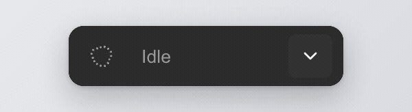
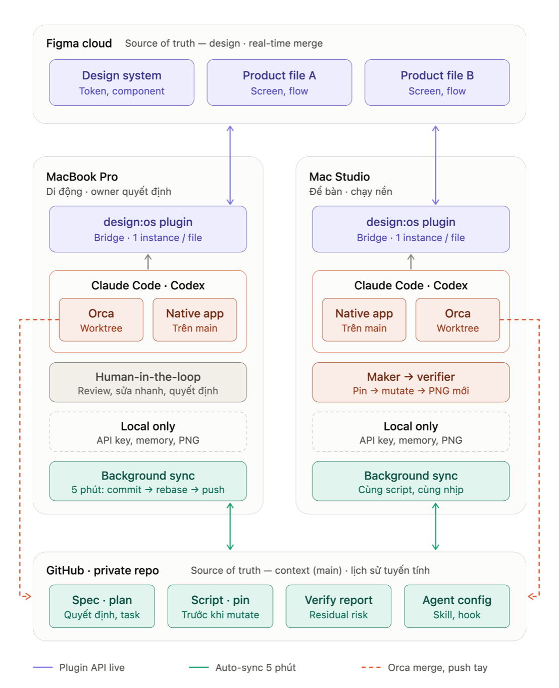

design:os · Figma plugin + CLI
Let your AI agent inspect and edit Figma while you keep designing.
A free Figma plugin and a figma-agent CLI for Claude Code, Codex, Cursor, or any agent that can run a shell command. Public Plugin API on Figma Free: no paid seat, no access token, no cloud service.



The rail inside Figma Desktop: the orb, the current state, and it expands only when there is something to review.
shipping build · recordingWhat it is
- Repository
- jangtrinh/
design-os-figma-plugin - Requires
- Node.js 22Figma Desktop with edit access
- Editors
- Figma, FigJam, Slides
- Transport
- Local WebSocket127.0.0.1, ports 9410–9419
- Runs a model
- Nobring your own agent
- License
- MIT
Why this bridge, compared with the alternatives
What this project does that Figma’s official MCP server and the community talk-to-Figma bridges do not, or do differently.
Write on Figma Free
Public Plugin API only: no Full seat, no OAuth token, no usage-based beta. Write-to-canvas through Figma’s MCP needs a Full seat (Figma docs, September 2026).
One undo step per mutation
⌘Z removes one agent change, not twenty minutes of automated work.
Mutations are jobs
A per-file FIFO queue with ids. A timeout gives you a job id to poll, and an unknown outcome blocks replay until you look at the canvas.
Your own edits come back
Captured live and offered as one reviewable sync, including edits made while the panel was closed. Dropped changes are counted, never hidden.
Lint before dispatch
A synchronous dynamic-page getter is refused before it can half-apply.
A per-file kill switch
mutation-gate pause seals one file against agent writes. Reads and your own editing continue.
Measured on a real file
21 pages, 418k nodes: 44 ms worst stall at open, idle re-index in 0.75 s slices, closed-panel edits reported on 21 of 21 pages. How it was measured.
Where the official MCP wins, and it is not close: Code Connect, cross-library search, design-to-code, and working with Figma Desktop closed. Use both: read through the MCP, write through this plugin. Row-by-row comparison.
Install once
Node.js 22 is CI-tested. Clone the repository, then run the commands from the repository root.
git clone https://github.com/jangtrinh/design-os-figma-plugin.git
cd design-os-figma-plugin
npm ci
npm run buildIn Figma Desktop, choose Plugins, then Development, then Import plugin from manifest…, then select plugin/manifest.json. For the first run, open the imported plugin in a scratch Figma file, not a client file.
First safe use
- Start or wait for a connection, and confirm that
statusreports the scratch file you opened.node "$PWD/cli/dist/figma-agent.js" status --wait --timeout 60 - Select a frame in that file, copy its real
instanceIdfromstatus, and make the first read-only request against that exact instance.node "$PWD/cli/dist/figma-agent.js" get-selection --instance "<instanceId>" - Optional, only in a scratch file: create a frame on that same instance.
node "$PWD/cli/dist/figma-agent.js" create-frame --name "Agent scratch" --w 320 --h 200 --instance "<instanceId>"
--instance prevents ambiguity when several files share a name. Read the JSON reply before proceeding: it is the record of what the bridge actually selected or changed.
A practical loop
get-selection
Serializes the current selection: hierarchy, text, component properties, styles.
context <nodeId>
Returns the Inspect panel’s own CSS declarations, the variables and styles each node binds, text and component properties, and the designer’s intent where it exists. Budgeted before the wire; counts everything it leaves out.
changes --owner-only
Reads the owner-edit feed for a bound project as plain sentences. Works even with the plugin closed.
mutation-gate pause
Pauses agent mutations for one raw Figma file key while reads stay available.
install-skill
Writes the generated skill to Claude Code’s ~/.claude/skills by default. Any shell-capable agent can use the command reference directly.
Working from more than one computer
Two planes of truth, never mixed: design lives in Figma, context lives in one private Git repo. Each Mac runs its own Figma Desktop, plugin and agents; a background job commits, rebases and pushes every five minutes.

How the plugin keeps two machines in sync through one Figma file and one Git repo. Full recipe, sync script and launchd installer.
docs · multi-machine-setupFAQ
Is it on Figma Community?
No. It is a development plugin imported from its own repository through Plugins, Development, Import plugin from manifest.
Does it run or pay for a model?
No. The CLI and broker do not run a model; you choose and pay for your own agent or provider separately.
Which agents can use it?
Any shell-capable agent, through the generated command reference. For Claude Code, install-skill writes the skill to ~/.claude/skills.
Does it need a paid Figma seat?
No. It uses the Public Plugin API in Figma Desktop. It needs edit access to the file for writes, and an imported plugin running in Figma Desktop.
Can the agent undo its own work?
Yes, for typed mutations: each one seals its own undo step, so ⌘Z rolls back one change, not a whole session. A script run with exec-js --undo-group attempts rollback when that script errors.
Does it replace Figma’s official MCP server?
No. They coexist. The official MCP is the better tool for Code Connect, cross-library search, design-to-code and working with Figma Desktop closed. This bridge writes to the open file on Figma Free.
DESIGN:OS Ecosystem
Modular toolchain for AI coding agents: from interface CLI to deterministic animation, 3D CAD and robotics.